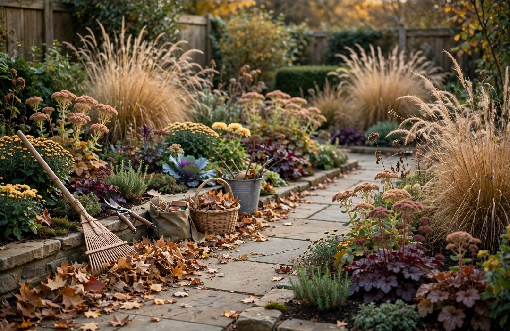

En este artículo
Introducción
Decorar un dormitorio pequeño consiste en priorizar circulación, almacenamiento y confort. Una distribución clara, muebles proporcionados y una decoración controlada pueden hacer que pocos metros resulten mucho más cómodos.
Antes de realizar cambios conviene observar el espacio, medir y definir qué problema quieres resolver. Trabajar con una intención clara evita compras impulsivas y ayuda a que cada decisión aporte comodidad, orden o identidad.
Organiza la distribución para ganar espacio
La cama es normalmente el elemento más grande y determina el resto de la distribución. Colócala de forma que permita abrir puertas y armarios y deje un recorrido claro. En habitaciones muy estrechas quizá no sea posible acceder por ambos lados; en ese caso, prioriza el uso real y evita forzar una disposición simétrica que consuma espacio.
Mide antes de mover. Incluye zócalos, radiadores, enchufes y apertura de ventanas. Unos centímetros pueden decidir si una mesilla cabe o si un cajón puede abrirse completamente.
Mantén la entrada visualmente despejada. Cuando se entra directamente contra el lateral de un armario alto o una cómoda profunda, la habitación puede sentirse más pequeña. Si es posible, coloca las piezas voluminosas sobre paredes menos visibles desde la puerta.
No llenes cada rincón. Una pequeña zona vacía ayuda a que el espacio respire y facilita limpiar. El dormitorio debe seguir siendo cómodo para vestirse, tender la cama y circular.
Prueba la distribución durante varios días antes de comprar complementos. A menudo las necesidades reales aparecen al usar el espacio, no al mirarlo desde arriba en un plano.
Para tomar decisiones con más seguridad, conviene trabajar por etapas y evaluar el resultado antes de seguir. Una modificación sencilla puede resolver más de lo esperado. Cuando se cambia distribución, color o iluminación, espera unos días y observa el espacio en diferentes momentos. La luz natural, el uso cotidiano y la circulación revelan aspectos que no aparecen en una fotografía de inspiración.
El presupuesto también debe formar parte del diseño. Define primero las necesidades y después asigna dinero a las piezas que realmente afectan al confort. Comprar varios accesorios económicos sin planificación puede costar lo mismo que una sola solución de mayor utilidad. Reutilizar, mover y editar lo existente es parte de una decoración inteligente.
Elige muebles adecuados a la escala
Los muebles proporcionados son más útiles que los muebles “para espacios pequeños” elegidos sin medir. Una cama con almacenamiento inferior puede sustituir una cómoda adicional. Una mesilla estrecha o una balda junto a la cama ocupa menos suelo que un mueble convencional.
Los armarios altos aprovechan el volumen vertical, pero deben organizarse bien para que la parte superior no se convierta en depósito de objetos olvidados. Utiliza cajas etiquetadas para artículos de temporada y mantén a mano lo que usas a diario.

Evita comprar muchas piezas diminutas. Tres muebles pequeños pueden ocupar más superficie visual y física que uno bien dimensionado con suficiente capacidad. Prioriza funciones combinadas: banco con almacenaje, escritorio que actúe como tocador o cabecero con balda integrada.
Los muebles con patas visibles pueden generar sensación de ligereza porque permiten ver más suelo, aunque esto no significa que todos deban ser elevados. Elige según almacenamiento y estilo.
Comprueba siempre estabilidad y seguridad, especialmente con muebles altos. Fíjalos a la pared cuando el fabricante lo indique y mantén despejadas salidas y recorridos.
El mantenimiento futuro debe influir en cada elección. Los materiales muy delicados, los textiles difíciles de lavar o los objetos que requieren cuidados constantes pueden resultar atractivos al principio y convertirse después en una carga. Pregúntate cuánto tiempo estás dispuesto a dedicar a limpieza y conservación.
La seguridad merece la misma atención. Muebles altos deben fijarse cuando corresponda, alfombras necesitan estabilidad, instalaciones eléctricas deben ser apropiadas y los objetos pesados no deberían quedar en posiciones de riesgo. Un espacio bonito tiene que seguir siendo cómodo y seguro para quienes lo usan.
Utiliza paredes, color e iluminación
El color puede ayudar a unificar. Pintar paredes, molduras y ciertos elementos en tonos cercanos reduce cortes visuales. Los colores claros reflejan luz, pero un tono medio o incluso oscuro puede funcionar en un dormitorio pequeño si la iluminación está bien resuelta y la paleta es coherente.
Las paredes ofrecen almacenamiento y decoración sin ocupar suelo. Balda sobre escritorio, apliques junto a la cama y ganchos bien colocados liberan superficies. Evita instalar demasiados estantes sobre zonas donde puedan resultar incómodos o peligrosos.
Los espejos pueden aumentar luz y profundidad si reflejan una ventana o una zona ordenada. No es necesario cubrir una pared completa; un espejo vertical bien situado suele ser suficiente.
La iluminación en capas es especialmente útil. Una luz general para limpiar y vestirse, más lámparas de lectura y una fuente ambiental, permite adaptar el dormitorio. Apliques de pared son una buena opción cuando las mesillas son pequeñas.
En cortinas, elevar la barra y utilizar un largo adecuado puede dar sensación de mayor altura. Asegúrate de no bloquear radiadores ni ventilación y de permitir un control de luz adecuado para dormir.

La decoración funciona mejor cuando existe una jerarquía visual. Elige uno o dos puntos de interés y permite que el resto acompañe. Si cada pared, mueble y accesorio intenta llamar la atención al mismo tiempo, la habitación se percibe más pequeña y menos serena.
Repetir materiales o colores crea continuidad. No significa comprar conjuntos idénticos, sino establecer relaciones: un tono de un cuadro puede aparecer en un cojín; una madera puede repetirse en un marco; un acabado metálico puede conectar lámpara y tiradores. Estas pequeñas repeticiones hacen que el espacio se sienta pensado.
Mantén el orden sin perder personalidad
El desorden ocupa metros visuales. Define un lugar para ropa usada, ropa limpia, accesorios y objetos pequeños. Una cesta para ropa, organizadores dentro de cajones y cajas bajo la cama pueden evitar que las superficies se llenen.
No confundas orden con ausencia de personalidad. Puedes mostrar libros, fotografías o una colección pequeña, pero selecciona. Una pared con una composición clara aporta más carácter que muchos objetos dispersos por toda la habitación.
Utiliza bandejas en la mesilla o cómoda para agrupar artículos. Cuando los objetos pequeños tienen un límite físico, la superficie se ve más controlada. Revisa cada cierto tiempo cosméticos, papeles y cables que ya no necesitas.
Los textiles también deben estar proporcionados. Una alfombra demasiado pequeña puede fragmentar el suelo; una de tamaño adecuado une la zona de la cama. Los cojines aportan color, pero demasiados ocupan espacio y requieren retirarlos constantemente.
Mantener el dormitorio despejado no exige perfección diaria. Una rutina de cinco minutos por la mañana o por la noche suele ser suficiente para devolver cada objeto a su lugar.
Por último, deja margen para que el espacio evolucione. Las necesidades cambian y la decoración no debería impedir adaptaciones. Evita llenar todos los huecos desde el primer día. Una casa personal se construye con el tiempo, incorporando piezas que tienen sentido y retirando aquellas que dejan de cumplir una función.
Revisar el espacio cada pocos meses ayuda a controlar acumulación y mantener coherencia. Si algo nunca se usa, siempre estorba o exige demasiado mantenimiento, quizá no merece el lugar que ocupa.
Consejos adicionales para mantener el resultado
Una estrategia útil es elegir una prioridad por pared. Una puede alojar la cama, otra el almacenamiento y otra permanecer más libre. Repartir muebles altos por todas las paredes crea sensación de encierro. Concentrar funciones permite que existan zonas de descanso visual.

Cuando el dormitorio también funciona como zona de estudio, delimita el escritorio con iluminación y almacenamiento propios. Al terminar, guarda material para que el trabajo no invada la zona de descanso. Una balda o carrito puede concentrar documentos sin ocupar otra habitación.
Antes de comprar decoración, revisa si existe una necesidad sin resolver. Si falta almacenamiento, un objeto decorativo nuevo no mejorará el problema. Resolver primero función y después estética suele producir un dormitorio más sereno y duradero.
Plan práctico para aplicar los cambios sin equivocarse
Empieza con una lista de tres prioridades y ordénalas por impacto. Por ejemplo: mejorar circulación, resolver almacenamiento y después trabajar la estética. Esta secuencia evita dedicar presupuesto a accesorios cuando todavía existe un problema funcional sin resolver.
Realiza una prueba temporal siempre que sea posible. Mueve muebles, coloca cinta para representar una alfombra o cuelga plantillas de papel antes de perforar. Vivir con esa propuesta durante unos días permite detectar molestias reales antes de gastar dinero o realizar cambios difíciles de revertir.
Haz una fotografía desde los principales puntos de vista. La cámara simplifica la escena y ayuda a detectar proporciones, acumulación y zonas vacías. Después compara con el objetivo inicial y decide si todavía falta algo o si el espacio ya funciona.
Por último, establece un límite de compras. Cada elemento nuevo debería resolver una necesidad, sustituir algo o aportar un valor visual claro. Si no puedes explicar qué función cumple, espera unos días antes de adquirirlo. Esta regla sencilla protege presupuesto y evita que el espacio vuelva a saturarse.
Errores frecuentes en dormitorios pequeños
Uno de los errores más comunes es elegir la cama sin medir la circulación que quedará alrededor. Otro es comprar almacenamiento abierto en exceso: aunque ofrece acceso rápido, también deja demasiados objetos a la vista y aumenta el ruido visual.
También conviene evitar demasiadas fuentes de luz pequeñas sin una luz general adecuada. El dormitorio necesita ambiente, pero igualmente debe permitir limpiar, vestirse y encontrar objetos con facilidad. Una combinación equilibrada funciona mejor.
Por último, no intentes convertir cada pared en almacenamiento. Aunque aprovechar la altura es útil, llenar todo el perímetro de estantes puede hacer que la habitación se sienta más estrecha. Concentrar el almacenaje en una o dos zonas suele dar un resultado más sereno.
Preguntas frecuentes
¿Cuál es la mejor manera de empezar a decorar un dormitorio pequeño?
Mide el espacio y define la ubicación de la cama antes de comprar nada. Después resuelve almacenamiento, iluminación y decoración en ese orden.
¿Qué colores hacen que un dormitorio parezca más grande?
Los tonos claros pueden reflejar más luz, pero no son la única opción. La continuidad de color, la iluminación y el orden visual influyen tanto como la tonalidad elegida.
¿Qué errores deberían evitarse?
Evita muebles demasiado grandes, múltiples piezas pequeñas sin función, bloquear ventanas y llenar las paredes o superficies con demasiados objetos.
Conclusión
Renovar o decorar un espacio no depende de llenarlo de objetos nuevos. En cómo decorar un dormitorio pequeño para que se sienta más amplio, las mejores decisiones son aquellas que mejoran el uso cotidiano, respetan las proporciones y pueden mantenerse con facilidad. Medir, observar, reutilizar y avanzar por etapas permite conseguir un resultado personal y duradero sin perder funcionalidad.